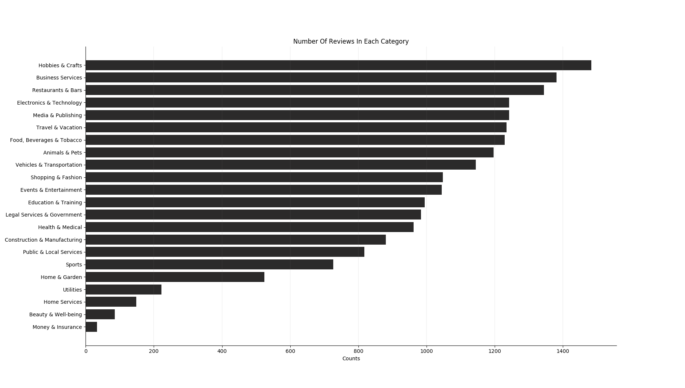

About
Informativeness Review Corpus
This corpus will focus on customer reviews from Trustpilot website and it is annotated based on informativeness of the review.
Trustpilot provides a platform which allows customers to leave reviews for companies products or their services.
We have scrapped approximately ~20,000 reviews from this website. The whole corpus can be downloaded here in JSON format.
Below is an example of one entry.
{ "review_id": "5e53f3613c93ae0bc4090fd8",
"company": "Boomerang Pet ID Tags",
"category": "Animals & Pets",
"rating": 5,
"consumer_id": "5bc504524de5666d345f102d",
"consumer_name": "Terri Bosman",
"consumer_review": "These are the best tags!! I only order from Boomerang. :)"
}
We have annotated 500 reviews to see whether or not reviews in our corpus are informative.
The total number of reviews in our corpus is 19,968 including 1,134,966 words. Below shows the number of reviews coming from each category.

The data has been annotated using Mechanical Turk
The scale of informativeness ranges from "Not informative" , "Less informative", "Informative", "Very informative".
For more information check the Annotation tab. Annotated corpus can be downloaded here
Corpus
Annotation
Rules For Annotation:
Not Informative review will not contain much information about the company's product or service. It is very subjective (purely opinion based). More dictation errors are found in the review
Less Informative review will only mention one or two aspects of company's service or product. Review will be a combination of subjective and objective comments. There is no reasoning behind the comments.
Informative review will contain enough information about company's product or service. Review will talk about few aspects about the company. It will contain reasoning behind the comments.
Very Informative review will contain comprehensive information about company's product or service. Review will talk about more aspects about the company. It will contain reasoning behind the comments. The comments give more background(relevant) and information about the experience of the user.
Few notes to consider:
The companies category has been provided for each review to give context of what the review is about. Long review does not mean more informative review, and the comments should be relevant and useful. To distinguish between "informative" and "very informative" it's useful to think whether that comment gives you all you need to know about the product or the service.
Future Improvements:
First, the annotation rules must be set in a more strict and clear manner. Rules should allow annotator to pick annotation based on more evident points.
Second aspect that could be improved is the scale of the informativeness.
In this corpus the reviews were annotated from range of "Not Informative", "Less informative", "Informative", "Very Informative".
Distinguishing the boundary between the two categories of "Not Informative" and "Less informative" could be challenging.
Combining the two scales into one could result in less disambiguation
Few notes to consider:
The companies category has been provided for each review to give context of what the review is about. Long review does not mean more informative review, and the comments should be relevant and useful. To distinguish between "informative" and "very informative" it's useful to think whether that comment gives you all you need to know about the product or the service.
Future Improvements:
- Example: "informative review" will contain rich content and it will talk about 2 to 3 aspects of the company's product or service. It will contain reasoning behind the comments and it will not be only based on emotions and subjectivity.
- New scale suggestion: "Not/less informative", "Informative", "Very Informative"
Summary
Count of Words in each level of annotation is shown bellow.